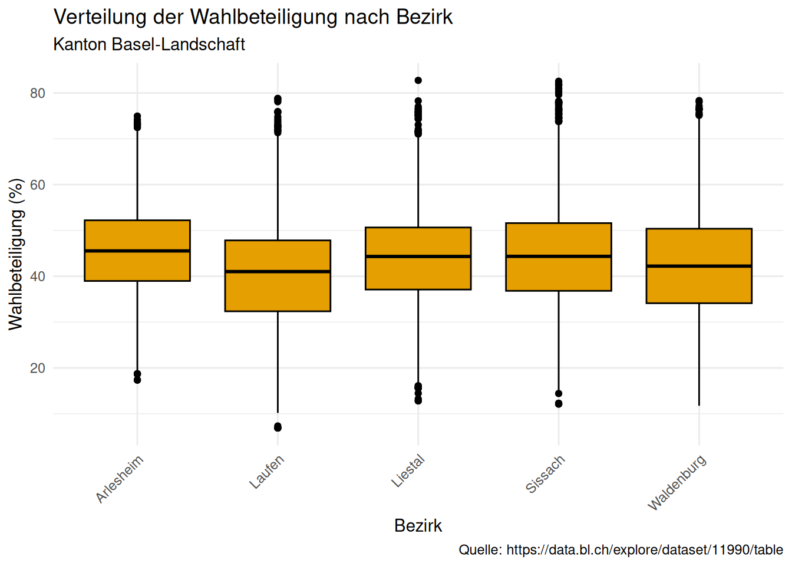
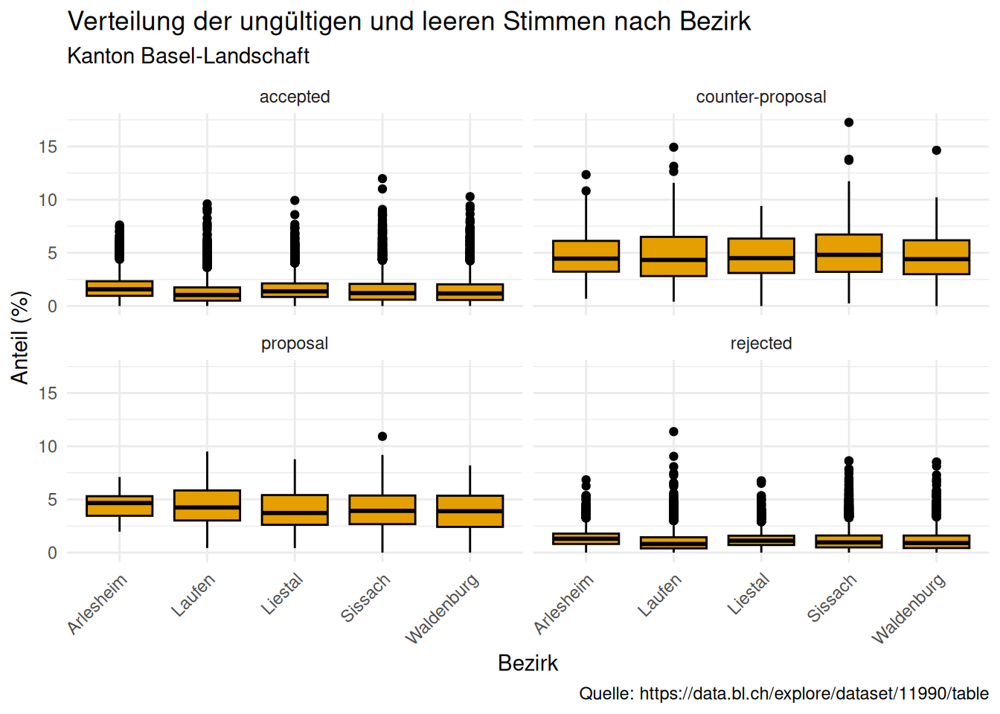

library(skimr)
library(tidyverse)Unit 3: Spalten transformieren mit dplyr
Tastaturkürzel
| Einen neuen Code-chunk hinzufügen | Ctrl + Alt + I |
| Code “Zeile für Zeile” innerhalb eines Code-chunks ausführen | Ctrl + Enter |
| Den gesamten Code-chunk ausführen | Ctrl + Shift + Enter |
| (Aus-)kommentieren | Ctrl + Shift + C |
Das Pipe |> |
Ctrl + Shift + M |
Der Zuweisungs-Operator <- |
Alt + - |
Packages und Daten Laden
Lade packages tidyverse und skimr.
Lade und erkunde die Abstimmungsdaten des Kantons BL: View(), glimpse() und skim()
abstimmung <- read_delim("data/ogd_abstimmungsarchiv_11990.csv", delim = ";")
# glimpse(abstimmung)
# skim(abstimmung)Spalten transformieren
Spaltennamen
Was sind die Namen der Spalten?
names(abstimmung) [1] "date" "entity_id" "name"
[4] "district" "vote_id" "domain"
[7] "type" "title_de_CH" "counted"
[10] "answer" "percent_yeas" "percent_nays"
[13] "percent_turnout" "eligible_voters" "expats"
[16] "empty" "invalid" "yeas"
[19] "nays" "link_to_canton_results" "url_web" Spalten verschieben: relocate()
Verschiebe die Prozentspalten (percent_yeas, percent_nays, percent_turnout) nach der Bezirksspalte (district):
relocate(abstimmung, percent_yeas, percent_nays, percent_turnout, .after = district)# A tibble: 31,734 × 21
date entity_id name district percent_yeas percent_nays percent_turnout
<date> <dbl> <chr> <chr> <dbl> <dbl> <dbl>
1 2017-05-21 2765 Binn… Arleshe… 87.9 12.1 46.2
2 2017-05-21 2766 Birs… Arleshe… 60.1 39.9 34.9
3 2017-05-21 2766 Birs… Arleshe… 29.5 70.5 34.2
4 2017-05-21 2766 Birs… Arleshe… 26.1 73.9 34.0
5 2017-05-21 2766 Birs… Arleshe… 35.1 64.9 33.9
6 2017-05-21 2766 Birs… Arleshe… 85.4 14.6 33.3
7 2017-05-21 2767 Bott… Arleshe… 48.3 51.7 52.6
8 2017-05-21 2767 Bott… Arleshe… 42.6 57.4 53.1
9 2017-05-21 2767 Bott… Arleshe… 22.5 77.5 52.4
10 2017-05-21 2767 Bott… Arleshe… 33.8 66.2 52.2
# ℹ 31,724 more rows
# ℹ 14 more variables: vote_id <chr>, domain <chr>, type <chr>,
# title_de_CH <chr>, counted <lgl>, answer <chr>, eligible_voters <dbl>,
# expats <dbl>, empty <dbl>, invalid <dbl>, yeas <dbl>, nays <dbl>,
# link_to_canton_results <chr>, url_web <chr>relocate(abstimmung, starts_with("percent"), .after = district)# A tibble: 31,734 × 21
date entity_id name district percent_yeas percent_nays percent_turnout
<date> <dbl> <chr> <chr> <dbl> <dbl> <dbl>
1 2017-05-21 2765 Binn… Arleshe… 87.9 12.1 46.2
2 2017-05-21 2766 Birs… Arleshe… 60.1 39.9 34.9
3 2017-05-21 2766 Birs… Arleshe… 29.5 70.5 34.2
4 2017-05-21 2766 Birs… Arleshe… 26.1 73.9 34.0
5 2017-05-21 2766 Birs… Arleshe… 35.1 64.9 33.9
6 2017-05-21 2766 Birs… Arleshe… 85.4 14.6 33.3
7 2017-05-21 2767 Bott… Arleshe… 48.3 51.7 52.6
8 2017-05-21 2767 Bott… Arleshe… 42.6 57.4 53.1
9 2017-05-21 2767 Bott… Arleshe… 22.5 77.5 52.4
10 2017-05-21 2767 Bott… Arleshe… 33.8 66.2 52.2
# ℹ 31,724 more rows
# ℹ 14 more variables: vote_id <chr>, domain <chr>, type <chr>,
# title_de_CH <chr>, counted <lgl>, answer <chr>, eligible_voters <dbl>,
# expats <dbl>, empty <dbl>, invalid <dbl>, yeas <dbl>, nays <dbl>,
# link_to_canton_results <chr>, url_web <chr>Spalten auswählen: select()
Überlegt euch so viele Möglichkeiten wie möglich, um date, entity_id, name, district, percent_yeas, percent_nays und percent_turnout auszuwählen. Tipp: siehe select helpers.
select(abstimmung, date, entity_id, name, district, percent_yeas, percent_nays, percent_turnout)# A tibble: 31,734 × 7
date entity_id name district percent_yeas percent_nays percent_turnout
<date> <dbl> <chr> <chr> <dbl> <dbl> <dbl>
1 2017-05-21 2765 Binn… Arleshe… 87.9 12.1 46.2
2 2017-05-21 2766 Birs… Arleshe… 60.1 39.9 34.9
3 2017-05-21 2766 Birs… Arleshe… 29.5 70.5 34.2
4 2017-05-21 2766 Birs… Arleshe… 26.1 73.9 34.0
5 2017-05-21 2766 Birs… Arleshe… 35.1 64.9 33.9
6 2017-05-21 2766 Birs… Arleshe… 85.4 14.6 33.3
7 2017-05-21 2767 Bott… Arleshe… 48.3 51.7 52.6
8 2017-05-21 2767 Bott… Arleshe… 42.6 57.4 53.1
9 2017-05-21 2767 Bott… Arleshe… 22.5 77.5 52.4
10 2017-05-21 2767 Bott… Arleshe… 33.8 66.2 52.2
# ℹ 31,724 more rowsselect(abstimmung, date:district, starts_with("percent_"))# A tibble: 31,734 × 7
date entity_id name district percent_yeas percent_nays percent_turnout
<date> <dbl> <chr> <chr> <dbl> <dbl> <dbl>
1 2017-05-21 2765 Binn… Arleshe… 87.9 12.1 46.2
2 2017-05-21 2766 Birs… Arleshe… 60.1 39.9 34.9
3 2017-05-21 2766 Birs… Arleshe… 29.5 70.5 34.2
4 2017-05-21 2766 Birs… Arleshe… 26.1 73.9 34.0
5 2017-05-21 2766 Birs… Arleshe… 35.1 64.9 33.9
6 2017-05-21 2766 Birs… Arleshe… 85.4 14.6 33.3
7 2017-05-21 2767 Bott… Arleshe… 48.3 51.7 52.6
8 2017-05-21 2767 Bott… Arleshe… 42.6 57.4 53.1
9 2017-05-21 2767 Bott… Arleshe… 22.5 77.5 52.4
10 2017-05-21 2767 Bott… Arleshe… 33.8 66.2 52.2
# ℹ 31,724 more rowsselect(abstimmung, c(1:4, 11:13))# A tibble: 31,734 × 7
date entity_id name district percent_yeas percent_nays percent_turnout
<date> <dbl> <chr> <chr> <dbl> <dbl> <dbl>
1 2017-05-21 2765 Binn… Arleshe… 87.9 12.1 46.2
2 2017-05-21 2766 Birs… Arleshe… 60.1 39.9 34.9
3 2017-05-21 2766 Birs… Arleshe… 29.5 70.5 34.2
4 2017-05-21 2766 Birs… Arleshe… 26.1 73.9 34.0
5 2017-05-21 2766 Birs… Arleshe… 35.1 64.9 33.9
6 2017-05-21 2766 Birs… Arleshe… 85.4 14.6 33.3
7 2017-05-21 2767 Bott… Arleshe… 48.3 51.7 52.6
8 2017-05-21 2767 Bott… Arleshe… 42.6 57.4 53.1
9 2017-05-21 2767 Bott… Arleshe… 22.5 77.5 52.4
10 2017-05-21 2767 Bott… Arleshe… 33.8 66.2 52.2
# ℹ 31,724 more rowsselect(abstimmung, date:percent_turnout, -c(vote_id, domain, type, title_de_CH, counted, answer))# A tibble: 31,734 × 7
date entity_id name district percent_yeas percent_nays percent_turnout
<date> <dbl> <chr> <chr> <dbl> <dbl> <dbl>
1 2017-05-21 2765 Binn… Arleshe… 87.9 12.1 46.2
2 2017-05-21 2766 Birs… Arleshe… 60.1 39.9 34.9
3 2017-05-21 2766 Birs… Arleshe… 29.5 70.5 34.2
4 2017-05-21 2766 Birs… Arleshe… 26.1 73.9 34.0
5 2017-05-21 2766 Birs… Arleshe… 35.1 64.9 33.9
6 2017-05-21 2766 Birs… Arleshe… 85.4 14.6 33.3
7 2017-05-21 2767 Bott… Arleshe… 48.3 51.7 52.6
8 2017-05-21 2767 Bott… Arleshe… 42.6 57.4 53.1
9 2017-05-21 2767 Bott… Arleshe… 22.5 77.5 52.4
10 2017-05-21 2767 Bott… Arleshe… 33.8 66.2 52.2
# ℹ 31,724 more rowsSpalten umbenennen: rename()
Benenne die folgenden Spalten in das deutsche Äquivalent um:
- date → datum
- entity_id → bfs_code
- name → gemeinde
- district → bezirk
rename(abstimmung, datum = date, bfs_code = entity_id, gemeinde = name, bezirk = district)# A tibble: 31,734 × 21
datum bfs_code gemeinde bezirk vote_id domain type title_de_CH counted
<date> <dbl> <chr> <chr> <chr> <chr> <chr> <chr> <lgl>
1 2017-05-21 2765 Binningen Arles… 201705… canton prop… Änderung d… TRUE
2 2017-05-21 2766 Birsfeld… Arles… 201705… feder… prop… Energieges… TRUE
3 2017-05-21 2766 Birsfeld… Arles… 201705… canton prop… Formuliert… TRUE
4 2017-05-21 2766 Birsfeld… Arles… 201705… canton prop… Nicht form… TRUE
5 2017-05-21 2766 Birsfeld… Arles… 201705… canton prop… Änderung d… TRUE
6 2017-05-21 2766 Birsfeld… Arles… 201705… canton prop… Änderung d… TRUE
7 2017-05-21 2767 Bottming… Arles… 201705… feder… prop… Energieges… TRUE
8 2017-05-21 2767 Bottming… Arles… 201705… canton prop… Formuliert… TRUE
9 2017-05-21 2767 Bottming… Arles… 201705… canton prop… Nicht form… TRUE
10 2017-05-21 2767 Bottming… Arles… 201705… canton prop… Änderung d… TRUE
# ℹ 31,724 more rows
# ℹ 12 more variables: answer <chr>, percent_yeas <dbl>, percent_nays <dbl>,
# percent_turnout <dbl>, eligible_voters <dbl>, expats <dbl>, empty <dbl>,
# invalid <dbl>, yeas <dbl>, nays <dbl>, link_to_canton_results <chr>,
# url_web <chr>Werte einer Spalte ändern: mutate()
Stimmanteile als Prozentsatz anzeigen (durch 100 dividieren):
mutate(
abstimmung,
percent_yeas = percent_yeas / 100,
percent_nays = percent_nays / 100,
percent_turnout = percent_turnout / 100,
.keep = "used"
)# A tibble: 31,734 × 3
percent_yeas percent_nays percent_turnout
<dbl> <dbl> <dbl>
1 0.879 0.121 0.462
2 0.601 0.399 0.349
3 0.295 0.705 0.342
4 0.261 0.739 0.340
5 0.351 0.649 0.339
6 0.854 0.146 0.333
7 0.483 0.517 0.526
8 0.426 0.574 0.531
9 0.225 0.775 0.524
10 0.338 0.662 0.522
# ℹ 31,724 more rowsSpalten erstellen: mutate()
Prüfe, ob die Summe der Ja- und Nein-Stimmen 100 beträgt.
mutate(abstimmung, percent_total = percent_yeas + percent_nays, .keep = "used")# A tibble: 31,734 × 3
percent_yeas percent_nays percent_total
<dbl> <dbl> <dbl>
1 87.9 12.1 100
2 60.1 39.9 100
3 29.5 70.5 100
4 26.1 73.9 100
5 35.1 64.9 100
6 85.4 14.6 100
7 48.3 51.7 100
8 42.6 57.4 100
9 22.5 77.5 100
10 33.8 66.2 100
# ℹ 31,724 more rowsBerechne die Anzahl der Wähler, die sich beteiligt haben:
mutate(abstimmung, turnout = percent_turnout * eligible_voters / 100, .after = percent_turnout)# A tibble: 31,734 × 22
date entity_id name district vote_id domain type title_de_CH counted
<date> <dbl> <chr> <chr> <chr> <chr> <chr> <chr> <lgl>
1 2017-05-21 2765 Binni… Arleshe… 201705… canton prop… Änderung d… TRUE
2 2017-05-21 2766 Birsf… Arleshe… 201705… feder… prop… Energieges… TRUE
3 2017-05-21 2766 Birsf… Arleshe… 201705… canton prop… Formuliert… TRUE
4 2017-05-21 2766 Birsf… Arleshe… 201705… canton prop… Nicht form… TRUE
5 2017-05-21 2766 Birsf… Arleshe… 201705… canton prop… Änderung d… TRUE
6 2017-05-21 2766 Birsf… Arleshe… 201705… canton prop… Änderung d… TRUE
7 2017-05-21 2767 Bottm… Arleshe… 201705… feder… prop… Energieges… TRUE
8 2017-05-21 2767 Bottm… Arleshe… 201705… canton prop… Formuliert… TRUE
9 2017-05-21 2767 Bottm… Arleshe… 201705… canton prop… Nicht form… TRUE
10 2017-05-21 2767 Bottm… Arleshe… 201705… canton prop… Änderung d… TRUE
# ℹ 31,724 more rows
# ℹ 13 more variables: answer <chr>, percent_yeas <dbl>, percent_nays <dbl>,
# percent_turnout <dbl>, turnout <dbl>, eligible_voters <dbl>, expats <dbl>,
# empty <dbl>, invalid <dbl>, yeas <dbl>, nays <dbl>,
# link_to_canton_results <chr>, url_web <chr>The pipe
Verwende the pipe für die folgenden Schritte:
- Behalte Zeilen für eine Gemeinde deiner Wahl
- Behalte alle Prozentteile und ja- und nein-Spalten
- Berechne die Wahlbeteiligung (Grundgesamtheit ist in der
eligible_voters-Spalte enthalten)
abstimmung |>
filter(name == "Allschwil") |>
mutate(turnout = percent_turnout * eligible_voters / 100, .after = percent_turnout) |>
select(contains(c("yeas", "nays", "turnout")), eligible_voters)# A tibble: 369 × 7
percent_yeas yeas percent_nays nays percent_turnout turnout eligible_voters
<dbl> <dbl> <dbl> <dbl> <dbl> <dbl> <dbl>
1 58.4 3443 41.6 2454 46.0 6092 13246
2 57.2 3285 42.8 2456 45.5 6033 13246
3 37.3 2143 62.7 3606 45.6 6038 13246
4 52.3 2676 47.7 2442 39.6 5262 13285
5 59.7 2579 40.3 1742 36.0 4780 13285
6 23.8 1035 76.2 3313 36.0 4780 13285
7 21.1 836 78.9 3131 36.0 4780 13285
8 53.2 2346 46.8 2060 36.2 4815 13285
9 46.5 2126 53.5 2442 36.5 4851 13285
10 46.0 2094 54.0 2460 36.5 4846 13285
# ℹ 359 more rowsOptional
Erstelle ein Boxplot von percent_turnout pro Bezirk:
ggplot(abstimmung, aes(x = district, y = percent_turnout)) +
geom_boxplot(fill = "#E69F00", color = "#000000") +
labs(
title = ("Verteilung der Wahlbeteiligung nach Bezirk"),
subtitle = "Kanton Basel-Landschaft",
x = "Bezirk",
y = "Wahlbeteiligung (%)",
caption = "Quelle: https://data.bl.ch/explore/dataset/11990/table"
) +
theme_minimal() +
theme(axis.text.x = element_text(angle = 45, hjust = 1))
Berechne den Anteil von ungültigen Stimmen (invalid und empty) pro Bezirk und Ergebnis (answer):
abstimmung |>
mutate(percent_invalid = (invalid + empty) / eligible_voters * 100) |>
ggplot(aes(x = district, y = percent_invalid)) +
geom_boxplot(fill = "#E69F00", color = "#000000") +
facet_wrap(~answer) +
labs(
title = "Verteilung der ungültigen und leeren Stimmen nach Bezirk",
subtitle = "Kanton Basel-Landschaft",
x = "Bezirk",
y = "Anteil (%)",
caption = "Quelle: https://data.bl.ch/explore/dataset/11990/table"
) +
theme_minimal() +
theme(axis.text.x = element_text(angle = 45, hjust = 1))